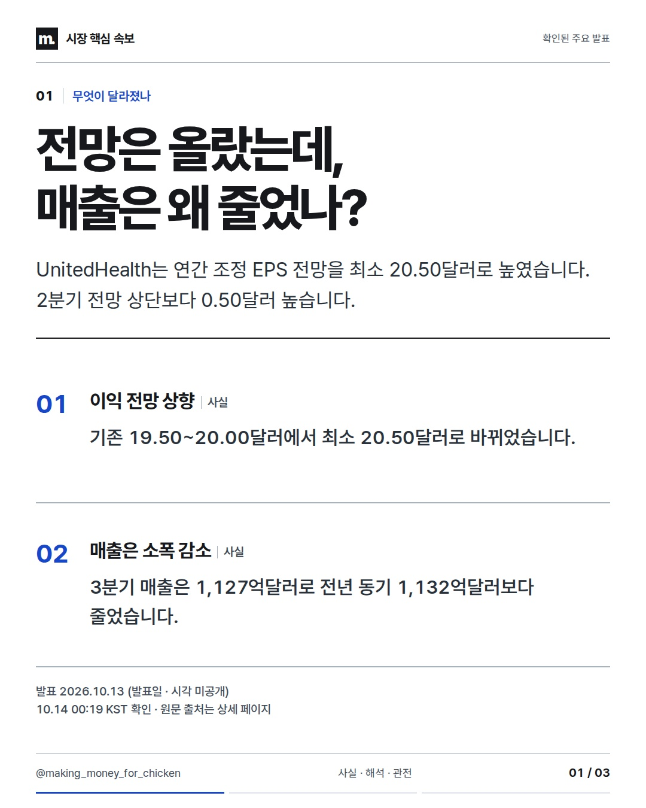
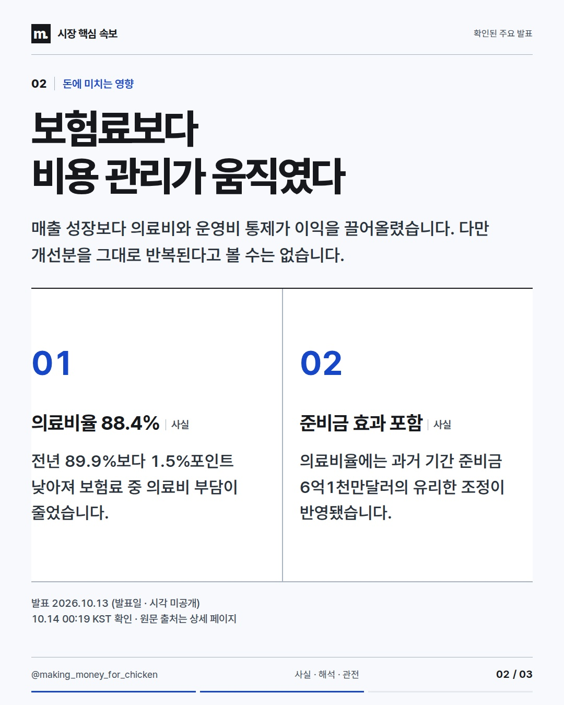
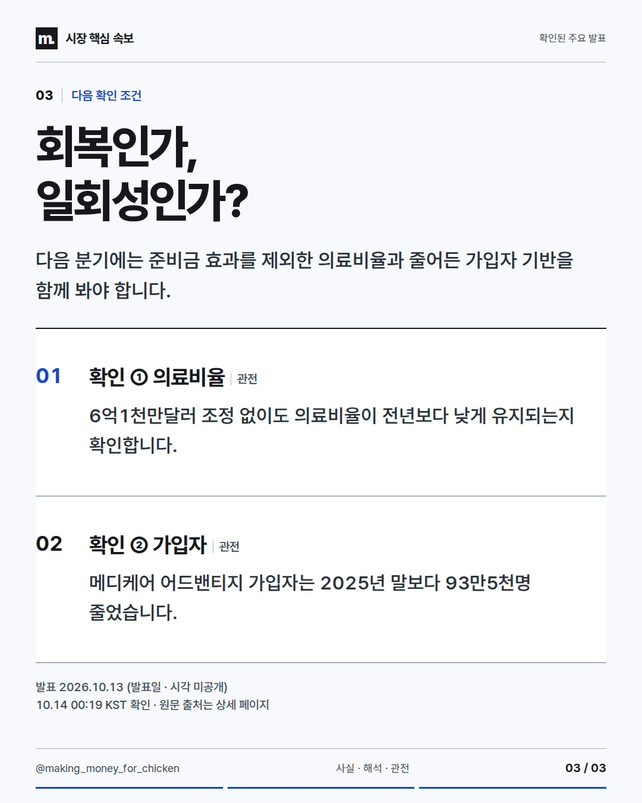

2026-10-13T15:19:40.598Z 확인 기준 · 발표 사실과 시장에 대한 해석을 구분합니다.
UnitedHealth는 매출이 줄었지만 의료비율과 비용 통제로 연간 이익 전망을 높였습니다. 다음 분기에는 6억1천만달러 준비금 효과를 빼고도 개선이 이어지는지가 핵심입니다. #미국주식 #헬스케어 #실적



사실·해석·관전 포인트를 구분한 정보 콘텐츠. 투자 참고용 · 매수·매도 권유 아님.